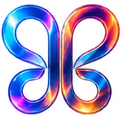
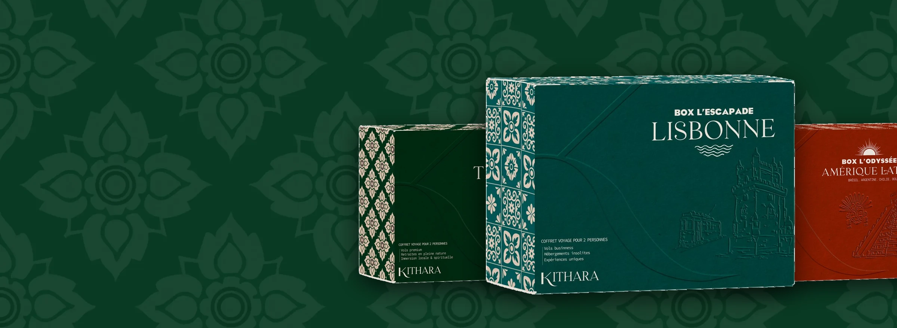
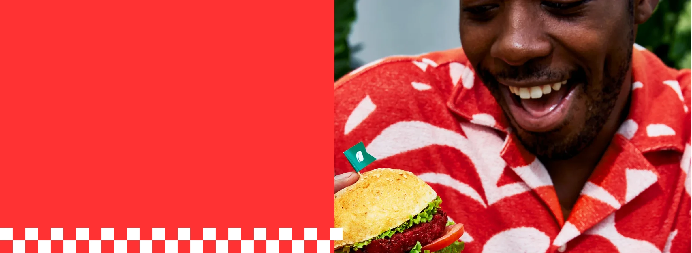
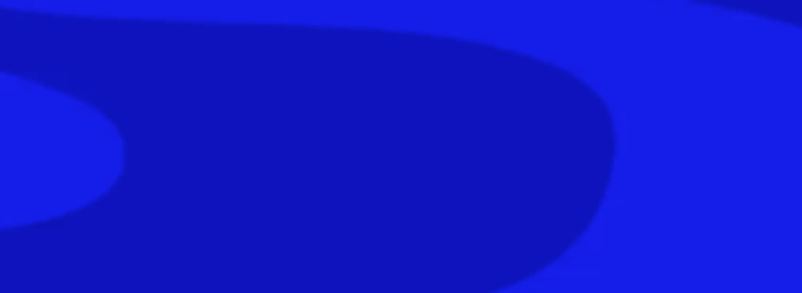

La barre en haut du portfolio a changé à chaque version. Voici, côte à côte, toutes les barres réellement mises en ligne, de la version 1 à la plus récente, sur ordinateur et sur téléphone. Puis douze nouvelles barres, vivantes : on peut passer la souris dessus, cliquer, faire défiler.
En tête, la barre de la version 17 et ses variantes. Les suivantes reprennent chacune une demande faite pendant la fabrication du portfolio : le rectangle arrondi de Disney+, le verre lisible d'Apple, le papillon au centre, la capsule du bas comme Instagram ou WhatsApp, la barre qui disparaît quand on descend.
Les essais du 14 novembre : le papillon dans un rond qui dépasse
Cinq essais avant de toucher à la barre du site. Rien n'est encore appliqué au portfolio : on choisit ensemble d'abord.
Essai 1 : le papillon dans un vrai rond, pictogrammes en ligne fineLe papillon est posé dans un rond de verre de 76 pixels, centré, qui dépasse la barre en haut et en bas (la barre fait 58 pixels). Le verre est simple : un flou, une seule lumière en haut, un contour très fin et régulier, sans dégradé de liseré. Dix pixels entre chaque pictogramme et son mot, dix-huit pixels de marge dans chaque bouton. Les pictogrammes sont en trait fin, comme ceux d'Apple.
Essai 2 : le même rond, pictogrammes pleinsMême barre, mêmes espaces. Les pictogrammes sont pleins : plus lisibles de loin et sur une image chargée, plus proches des barres d'Instagram ou de Disney+.
Essai 3 : le même rond, pictogrammes en deux tonsLes pictogrammes de la version 17 (un trait et un remplissage léger), avec le nouveau rond et les nouveaux espaces. Pour comparer à la barre d'aujourd'hui, plus bas.
Essai 5 : le verre de la version 12Le verre plus sombre et plus dense de la version 12 (que vous préférez), avec le rond qui dépasse et les pictogrammes en ligne fine.
La barre de la version 17 (celle du site aujourd'hui)Le papillon au centre exact, dans un fin anneau de verre. Les rubriques sont réparties à gauche et à droite selon leur largeur réelle, pour que les deux côtés pèsent pareil. Un verre liquide flouté, et un liseré régulier qui accroche la lumière en haut à gauche et en bas à droite. Des pictogrammes redessinés de la même famille, traits ronds et léger remplissage.
La même barre sur une page claireSur un fond clair (Zefil, les pages légales), le verre devient laiteux, le texte passe en bleu nuit et le liseré se fonce pour rester visible.
La variante au liseré doréLe même dessin, avec un liseré et un anneau dorés et le papillon en or : une idée pour les pages des récompenses ou pour Majesty Records.

La variante en pictogrammes seulsSeulement les symboles, sans les mots, pour les écrans moyens (iPad tenu droit). Le papillon multicolore sombre de Mon univers au centre.
1. Le rectangle arrondi de Disney+Un rectangle aux coins arrondis plutôt qu'une pilule, sombre et posé sur l'image, le papillon en haut à gauche, Collections et Playlists séparées dans le menu.
2. Le verre liquide d'Apple, clair et lisibleUn verre qui laisse passer les couleurs, avec un reflet en haut et une ombre douce, mais un texte toujours lisible grâce à une petite ombre portée. Pas bleuté, pas trop uni.
3. Le papillon au centreLe logo au milieu de la barre, les rubriques réparties de chaque côté, comme sur le site d'une maison de mode.



4. La capsule du bas, comme Instagram ou WhatsAppSur téléphone, une capsule de verre flottante en bas de l'écran, à portée de pouce. Une lentille glisse sous l'onglet touché. Le contenu défile derrière le verre (on peut faire défiler l'écran).
5. La barre qui se cache quand on descendFaites défiler le cadre : la barre disparaît vers le haut quand on descend, et revient dès qu'on remonte un tout petit peu. Sur l'accueil, elle reste visible.
6. Les onglets d'une plateformeUn simple trait blanc sous l'onglet choisi, comme les rubriques d'une plateforme de streaming. Idéal sous la grande barre, pour passer des collections aux playlists.
7. Le rail sur le côtéUne colonne d'icônes à gauche, comme Disney+ sur ordinateur. Au passage de la souris, elle s'élargit et montre le nom de chaque rubrique.
8. La pastille qui s'ouvreAu repos, une petite pastille noire avec le papillon et le nom. Au passage de la souris, elle s'étire et dévoile le menu, comme l'île dynamique de l'iPhone.
10. Le bleu nuit à grande ombreUn dégradé bleu nuit et une ombre portée profonde, comme celle de la page de la Nuit des musées : la barre semble flotter au-dessus de l'image.
11. Deux étagesLe nom et la recherche en haut, les rubriques en pastilles en dessous. Pratique sur téléphone : tout tient sans rien cacher, les pastilles défilent du doigt.
12. La recherche au centreLe champ de recherche prend toute la place du milieu, comme sur les plateformes : on tape « affiche », « Kithara » ou « InDesign » et les travaux apparaissent.
🗂️ Les barres des versions mises en ligne
Capturées telles qu'elles étaient : sur ordinateur, puis sur téléphone en haut et en bas de l'écran.
🎨 Les sept styles de la version 1
La première version proposait sept pages d'accueil différentes, chacune avec sa propre barre.